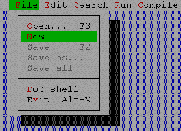
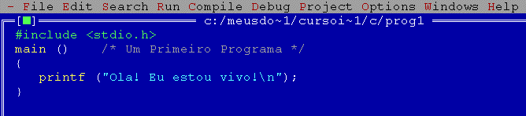
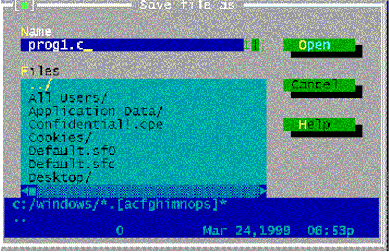
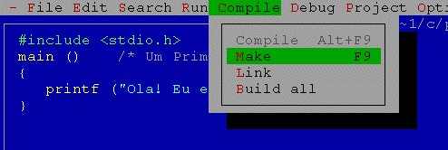
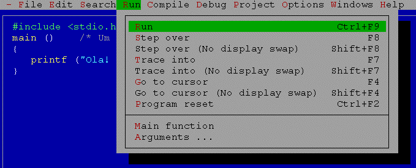
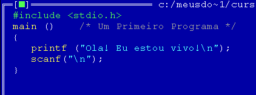
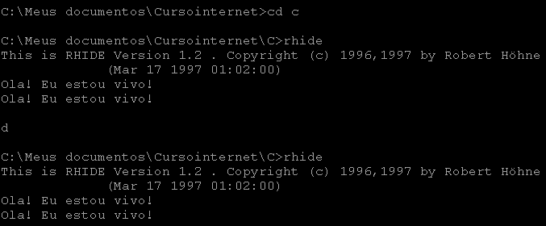
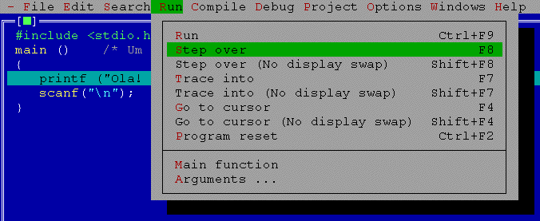
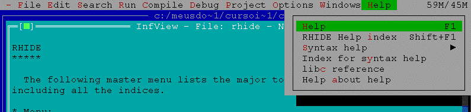

Uso do RHIDE
Nesta página fornecemos algumas instruções básicas para uso do ambiente de programação RHIDE (estas instruções também são válidas para o TClite). O RHIDE facilita em muito a criação de programas em C. As instruções fornecidas são básicas, para que se consiga compilar e executar os primeiros programas em C. Com o uso do HELP do RHIDE você conseguirá maiores informações.
Passos a serem seguidos para utilizar o RHIDE:
1- Instalar o DJGPP e o RHIDE em seu computador. Veja
como, clicando aqui.
2- Abrir uma janela do DOS, ir para o diretório onde voce vai criar
seus programas e digitar: rhide
3- Se você vai criar um novo arquivo de programa, chamar a opção
File -> New (ver figura abaixo)

4- Uma vez criado um novo arquivo, digite o seu programa nele, como indicado abaixo:

5- Agora você pode salvar o seu programa, chamando
File -> Save, e digitando o nome do arquivo .c que vai armazenar seu programa. Por
exemplo, digite prog1.c e a seguir clique em Open (sim, é Open mesmo, esta caixa de
diálogo está trocada), como no exemplo abaixo:
OBS:
1) não use nomes com número de caracteres maior que 8. O Rhide é um programa para DOS e
não entende os nomes longos do Windows 95
2) Sempre coloque a extensão do arquivo que você está criando. O
Rhide não coloca o .c automáticamente!

6- O próximo passo a ser seguido é compilar o programa (gerando o arquivo .o) e linkar com as bibliotecas do C (gerando o arquivo executável, .exe). Chame a opção Compile -> Make. Caso não existam erros no seu programa, aparecerão as mensagens:
Compiling: prog1.c
No errors
Creating: prog1.exe
no errors
na janela de mensagens, conforme a figura abaixo. Se houver erros, o Rhide indicará a linha onde este erro ocorreu e você deverá corrigir o seu programa.

7- Agora você pode executar o programa, chamando a opção Run -> Run, conforme a figura abaixo:

8- Um programa simples como este vai enviar a mensagem Ola! Eu estou vivo! para a tela do DOS e terminar a execução, apresentando uma caixa de dialógo com um botão de OK e a mensagem Program exit code -1 (0xffffff). Não se assuste, isto não é uma mensagem de erro! Se você quiser ver a tela do DOS, após o término da execução, poderá chamar FILE -> DOS Shell. Depois é só digitar exit <enter> para você voltar ao RHIDE. Você também pode apertar simultaneamente as teclas <ALT> e <F5>, para chavear entre a tela do DOS e a tela do RHIDE. Se você quiser ver a tela do DOS antes do término da execução, terá que momentaneamente parar a execução. Existem várias formas de fazer isto. Uma delas é modificar o seu programa para que ele tenha uma entrada "fictícia" de dados. Inclua a linha scanf("\n"); no programa, como indicado na figura abaixo.

9- Ao fazer isto, recompile o programa e execute-o novamente. Você vai ver uma tela semelhante à apresentada na figura abaixo. Repare a mensagem Ola! Estou vivo. , na parte inferior da tela. Para continuar a execução, você terá que digitar alguma coisa para o scanf e apertar a tecla <Enter> em seguida. O programa então terminará sua execução e você voltará ao ambiente do Rhide.

10- Outra forma de verificar o que um programa está fazendo é executá-lo passo a passo. O Rhide permite isto. Basta chamar a opção Run -> Step over, como indicado na figura abaixo, ou então apertar a tecla F8. A cada vez que você fizer isto, o programa executará uma instrução. A barra azul claro indica qual é a instrução corrente. Para ver a tela de saída, você pode apertar simultaneamente <ALT> e <F5>. Existem várias outras opções de execução disponíveis no menu Run. Você pode verificar o que elas fazem consultando o Help do Rhide, conforme item 11 abaixo. É também interessante você conhecer as opções que estão no menu Debug, que auxiliam bastante no processo de depuração de programas.

11- O Rhide possui um bom sistema de HELP, que você deve consultar para verificar todas as suas potencialidades. Para acessá-lo, basta chamar a opcao Help no menu principal. Veja que o Help tem opções não somente quanto ao uso do Rhide, mas também sobre funções da linguagem C. Veja a figura abaixo.

Só apresentamos uma introdução ao uso do RHIDE. Com o seu
uso, você aprenderá muito mais, especialmente se você não tiver medo de consultar o
HELP! Você também pode consultar a
documentação on-line no site original do RHIDE para maiores detalhes.
Curso de C da Engenharia Elétrica da UFMG - 1996-1999